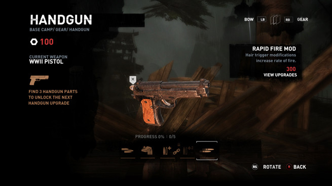

Mass Effect UI Redesign
A redesign of Mass Effect's UI for the Equipment and Upgrade screens, updating the look and addressing user concerns.
Roles: User Research, Information Architecture, UX/UI Design, Testing
Duration: 4 weeks
Tools: Adobe XD, Figma, GIMP, InVision
Process: Competitive Analysis, User Survey, User Personas, User Stories, User Flows, Wireframes, Prototype, Usability Testing
Mass Effect Redesigned Equipment Screen
Summary
Renowned for its impressive dialogue system and epic storytelling, Mass Effect is a sci-fi action role-playing third-person shooter, the first installment in a trilogy. However, some fans have been critical of its UI, so I wanted to try my hand at improving the user experience using updated UI design concepts and methodologies.
Problem
Since Mass Effect is a large game with a lot of menus, I decided to focus on the equipment screen of the PC version, where users had the following issues:
- Inability to see all items for all characters
- Wasted space/ inadequate number of items displayed at once
- Underuse of visual aids
- Inability to see how weapon upgrades improve weapon
- Inconsistent/unclear iconography
Solution
A re-design including more color contrast, more displayed information, re-vamped iconography, and accessibility to all squad members’ items.
Mass Effect Equipment Screen original and redesign
Discovery and Research
Competitive Analysis
To get a better idea of what makes game UI “good,” I conducted a competitive analysis between three games that are celebrated for their UI: Dead Space, Persona 5, and Tomb Raider (2013). From this analysis, I concluded that perfection is not possible due to subjectivity and scope. Although players prefer consistency, functionality, and visual appeal.
DEAD SPACE
Strengths
- UI is built into the environment
- Never pauses gameplay, maintaining tension
- Player character interacts with UI believably
Weaknesses
- Not visually stunning
- Inability to pause can frustrate gamers in a hurry/emergency
PERSONA 5
Strengths
- Visually stunning
- Great animations and transitions
- Theme of menus match the game's lore
Weaknesses
- Can come across as wild and messy
- Can be hard to read and confusing
TOMB RAIDER (2013)
Strengths
- Menus are beautiful, intuitive, and slickly animated
- Design is simple yet striking, consistent, and polished
- Functional and works with game narrative
Weaknesses
- UI can be a little intrusive
- UI also seems to confuse some players
User Survey
I conducted a survey showing participants the original screenshots from Mass Effect and asking about what they thought about certain elements in the UI.
SurveyWhat makes UI enjoyable for users:
- Responsiveness, communicativeness, vibrant contrast
- Easy access to switching weapons, clearly titles pages, easy navigation
- Layout, information density, organized equipment menu
How users feel about Mass Effect's current UI:
- Bland and minimalistic, not high contrast
- Symbols are a bit vague
- Not enough info
User Personas
From my survey, I was able to create 3 personas representing the users interested in video game UI. One represents someone who works in the game industry and is very knowledgeable about game UI, one represents a more casual player who is a fan of the game, and one represents a player who is not familiar with the Mass Effect franchise, but is still knowledgeable about game UI and loves games with mods..

Information Architecture
User Stories
For the user stories, I thought of all the possible things a user would want to see and do when navigating through their equipment. After prioritizing them, I chose the following to focus on:
- View weapon comparison
- View weapon upgrade
- View ammo upgrade
- View weapon details
- Switch weapon types
- View/manage other squad members’ equipment
User Flows
I took the user stories and iterated each step in those tasks to come up with the user stories below:
Wireframes
After meticulously creating the content strategy, I drew sketches and iterated digital wireframes for all of the pages needed for the user flows.
Equipment Screen Wireframe (sketch and digital)
Upgrade Wireframe (sketch and digital)
Visual Design
Branding
As this is a redesign, I wanted to maintain the original look, but at the same time give it a more modern feel. I took screenshots of the original screens and used the color picker to see all of the colors that were used. I scaled that down into a color palette. I also researched what typeface was used for the original and found a google font very similar to that. I played around with that typeface to figure out sizes and weights I wanted to use and also found a complementary typeface that helped maintain the futuristic look, but was better suited for long paragraphs. I consolidated these assets along with some button and iconography work into a style guide.
Hi-fi Mockup Iterations
Equipment Screen Hi-fi Mockup, 1st and 2nd Iterations
I generated some Hi-Fi Mockups and turned them into a Prototype. After some feedback on the visual success of the still mockups and the first round of user testing, I successfully made the screen easier to read with more negative space. The first iteration was a little busy and more prone to eye fatigue. My second attempt displays the same amount of information more effectively and is also more accessible.
Upgrade Hi-fi Mockup, 1st and 2nd Iterations
Usability Tests
After more testing of my prototype, I made the following changes to create a third iteration:
- Added extra back button on the details page for ease of use
- Increased how much title bars differentiate from buttons for clarity
- Grouped resources
- Added arrows in inventory list comparison

Equipment Screen Hi-fi Mockup, 2nd and 3rd Iterations
I got one more round of feedback on my prototype. The following changes were made to make the final iteration:
- Remove boxes around "Equipped Items" and "Inventory" sections and insert thin line between them instead, increase space between them as well
- Round the corners of the buttons and bars for a more modern look
- Round the scroll bar and make it thinner, create more space in list
- Make the list on the right mimic the list on the left (remove bars and borders, lighten un-selected items and place thin line between items).
- Added extra back button on the details page for ease of use

Equipment Screen Hi-fi Mockup, 3rd and final Iterations
Conclusion
For this project I wanted to focus on my visual/UI design skills. I feel fairly pleased with my image editing and iconography creation skills and will continue to practice and hone them for future projects. I found that there’s so many possibilities in game UI and no single “right way” to go about it. What some users liked or thought was obvious, others did not. If I had more time, I would create hover states for every clickable item in the prototype, create a details page for every equipped item, have every item type clickable/viewable (can only view assault rifle and shotgun currently), cut/paste images of all squad members in the game so you can actually switch characters, and maybe even create a separate prototype for a console version as that interface would need to function differently.